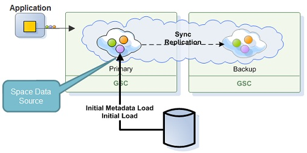
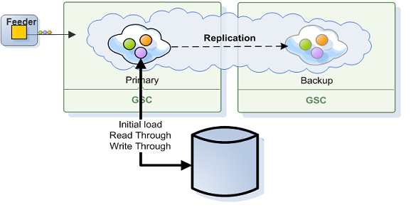
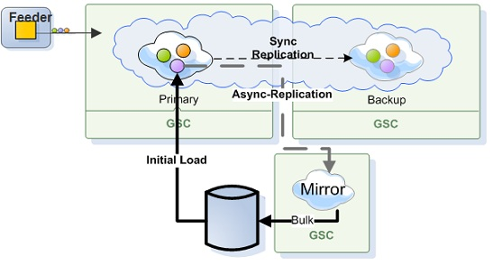

The Space Persistency is provided via a component called External Data Source. This component provides persistency capabilities for the space architecture to interact with a persistency layer:
AbstractExternalDataSource class, which can be extended and then used to load and store data into an existing data source. Data is loaded from the data source during Space initialization, and from then onwards the application works directly with the Space.

Persistency can be configured to run in Synchronous or Asynchronous mode:
Synchronous
Synchronous Mode - see Direct Persistency

Asynchronous Mode - see Asynchronous Persistency with the Mirror

The difference between Synchronous and Asynchronous persistency mode is the way that data is persisted back to the database. In Synchronous mode, data is persisted immediately after the operation is conducted where the client application waits for the ExternalDataSource to confirm the write. In Asynchronous mode (mirror Service), data is persisted in a reliable asynchronous manner using the mirror Service as a write-behind activity. This mode provides maximum performance.
The Space Persistency API contains an abstract class that should be extended in order to customize the Space persistency functionality. The ability to customize the Space persistency functionality allows
| Client Call | External Data Source Call | Cache Policy Mode | EDS Usage Mode |
|---|---|---|---|
Write, Change, Take, WriteMultiple, TakeMultiple, Clear |
ExecuteBulk
|
ALL_IN_CACHE, LRU | read-write |
Transaction Commit
|
ExecuteBulk
|
ALL_IN_CACHE, LRU | read-write |
Read, ReadMultiple, ReadById, ReadByIds, Count |
GetEnumerator
|
LRU | read-write,read-only |
TakeMultiple
|
GetEnumerator
|
ALL_IN_CACHE, LRU | read-write |
For detailed API information, see the External Data Source API page.
AbstractExternalDataSource called NHibernate Space Persistency.
Refer to Space Persistency Initial Load for information on how to allow the Space to pre-load its data.